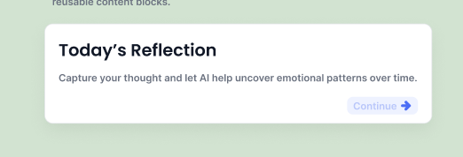

Structure
- Title
- Supporting text
- Optional action button
- Consistent spacing and padding
Components
Reusable content containers used to group related information and actions across the LifeNote interface.

Cards group related content such as journal entries, reflections, and insights into clean, reusable content blocks.
This helps create a more structured and readable interface while supporting a consistent system across screens.
Use cards to separate related content into clear sections.
Use cards when content needs supporting text and an optional action.
Keep card content focused, readable, and visually balanced.